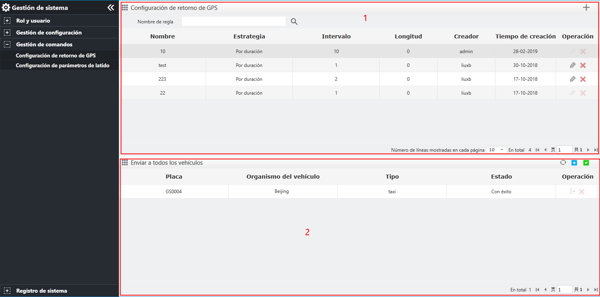
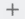

Mantenimiento de las reglas de información de ubicación, incluidas la adición, edición, eliminación, consulta y reglas de
información de ubicación del vehículo.
Haga clic en la barra de menú de navegación izquierda para ingresar a la página de configuración de regla de información de ubicación.

Fig 89 Configurar la regla de información de ubicación
|
• |
Área 1: configuración de retorno GPS |
|
• |
Área 2: Reglas actuales aplicadas al vehículo. |
|
• |
Configuración de retorno GPSHaga clic en el área 1 〖〗 para abrir el cuadro de diálogo “Agregar”, rellene el nombre de la regla de retorno GPS, seleccione la estrategia, configure el intervalo de tiempo y haga clic en
〖Guardar〗 para finalizar la adición.
|
– |
Para obtener detalles sobre la edición, eliminación y consulta de las reglas de información de posicionamiento, consúltelas
Gestión de roles. |
|
– |
Las reglas de información de posicionamiento en la aplicación no pueden modificarse ni eliminarse, y la asociación con el
vehículo de la aplicación debe descartarse primero. |
|
|
• |
Emitir vehículo
|
1. |
Haga clic en el botón en el área 2 〖 〗en la página de configuración de regla de información de posicionamiento, aparezca el cuadro de diálogo para seleccionar vehículo,
seleccione el vehículo, haga clic en 〖Aceptar〗 y agregue el vehículo a la regla seleccionada actualmente. 〗en la página de configuración de regla de información de posicionamiento, aparezca el cuadro de diálogo para seleccionar vehículo,
seleccione el vehículo, haga clic en 〖Aceptar〗 y agregue el vehículo a la regla seleccionada actualmente. |
|
2. |
Haga clic en el botón en el área 2 〖〗para que aparezca el cuadro de aviso, haga clic en 〖Aceptar〗 para emitir la regla al vehículo. |
|
3. |
Haga clic en el botón en el área 2 〖 〗 para que aparezcan todos los cuadro de aviso de emitir y haga clic en〖Aceptar〗 para emitir las reglas a todos los vehículos de la lista. 〗 para que aparezcan todos los cuadro de aviso de emitir y haga clic en〖Aceptar〗 para emitir las reglas a todos los vehículos de la lista. |
|
4. |
(Opcional) Haga clic en el botón 〖〗 en el área 2 para actualizar la lista. Haga clic en el botón 〖〗 en el área 2 para eliminar la asociación entre el vehículo y la información de ubicación.
Solo se puede aplicar una regla de información de posicionamiento al mismo vehículo.
|
|